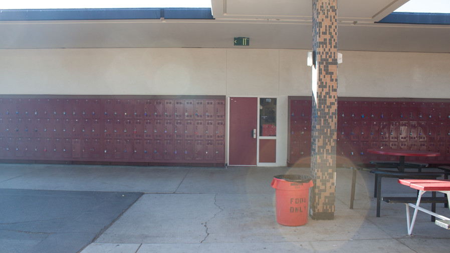
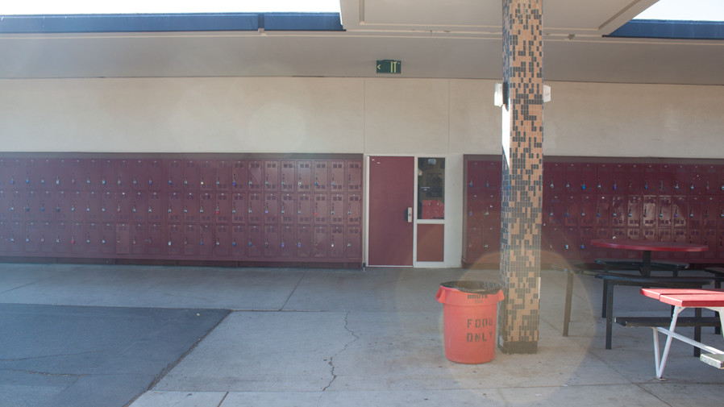

Quad
200 Building
300 Building
400 Building
500 Building
900 Building
1000 Building
The Quad is a central area for students to make their way to their classes every day. Additionally, many school events and club fundraisers are held here because it is spacious and easily accessible.
The 200 Building is mostly known for its Library. Here, students can study in silence and borrow from a wide array of books. The library also has many computers as well as a few printers for students to use. However, the 200 Building also includes the Lecture hall and one English classroom.
The 300 Building mainly contains Math, English, and Foreign Language classrooms. This is the largest building on Troy’s campus with 3 long parallel hallways intersected with another perpendicular hallway leading to the back of the school.
The 400 Building is the main hub for elective and tech courses offered at Troy. Here, students are often seen participating in programs such as ROTC, Band, Choir, and Art. Additionally, AP Computer Science Principles, AP Computer Science A, and Computer Science IBSL are taught here.
The 500 Building is the history building at Troy. In this building, students take classes such as World History, European History, American History. There is a variety of furniture placed in the extremely spacious hallways for students to relax in before classes. Also, many student artworks are hung up on the walls of the hallways for students to enjoy.
The 900 Building is all about science. In this building, students can learn about Biology, Chemistry, Physics, Anatomy, and more. This building is located somewhat far away from the other buildings, and students usually take the Breezeway from the Quad to get there. This is also where Troy’s renowned Science Olympiad team practices after school.
The 1000 Buildings are usually viewed as extra classrooms used by Cyber Security and Business classes. One of the buildings has two powerful computer labs, which is where Troy’s Cyber Security team practices.

 
